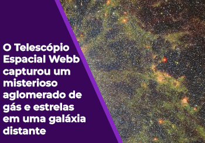
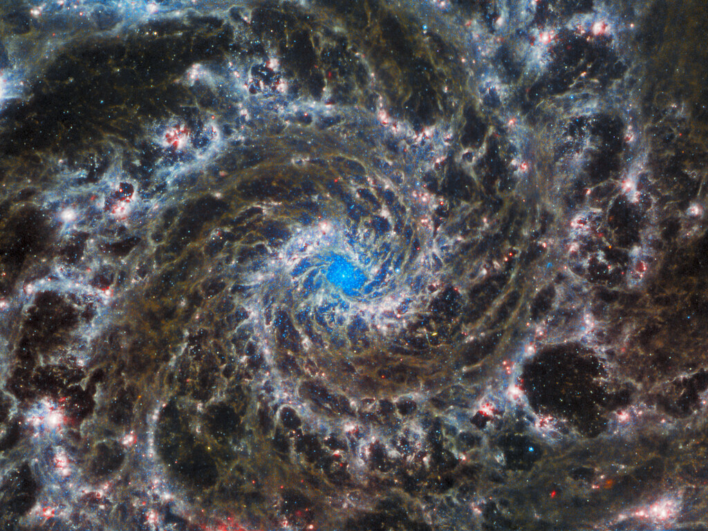

Telescópio Hubble Hubbler fotografa uma galáxia Distânte Nesta imagem está presente a galáxia messier 85, capturada em toda sua gloria delicada porem nebulosa A galáxia contém cerca de 400 bilhões de estrelas, a maioria das quais são muito antigas. No entanto, a região central abriga uma população de estrelas relativamente jovens de apenas alguns bilhões de anos de idade... Galáxia O Quinteto de StephanUm enorme mosaico do Quinteto de Stephan é a maior imagem até hoje do Telescópio Espacial James Webb da NASA/ESA/CSA. Esta imagem composta NIRCam-MIRI usa dois dos três filtros MIRI para melhor mostrar e diferenciar a poeira quente e a estrutura dentro da galáxia. MIRI vê uma diferença distinta de cor entre a poeira nas galáxias versus as ondas de choque entre as galáxias em interação... James Web  Um delicado traço de poeira e aglomerados estelares brilhantes . o aglomerado de gás e estrelas brilhantes pertencem à galáxia espiral chamada de NGC 5068, que esta cerca de 20 milhões de anos-luz da Terra, na constelação de Virgem... Galáxia  Webb investiga o coração da galáxia fantasmaA Galáxia Fantasma está a cerca de 32 milhões de anos-luz de distância da Terra, na constelação de Peixes, e fica quase de frente para a Terra. Isso, juntamente com seus braços espirais bem definidos, o torna um alvo favorito para os astrônomos que estudam a origem e a estrutura das espirais galácticas...